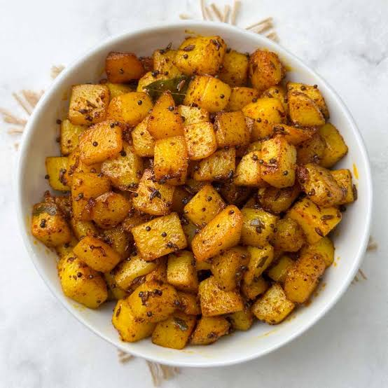

Cuisine
-

KHIR
Khir is made up by including rice, milk, and drynuts as seen in the figure. This item is must to have when you visit different temples of Nepal.
-

JEERAALU
Jeeraalu is basically made by using potatoes from himalayan reagion. In nepal mustang, manang areas were very famous for
-

SEL ROTI
Selroti is specially made from mixture of Rice flour and sugar. It is a deep fried items and eaten with somes kinds of pickels.